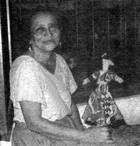

Zobeyda Jimenez ha sido invitada a importantes eventos culturales a nivel internacional, entre ellos creatividad 90 bajo los auspicios de la UNESCO y la Universidad de Carabobo, 1er Congreso Internacional de Creatividad de la Universidad Javeriana en Bogotá; así como también por la Casa "Simón Bolivar" de La Habana Vieja, bajo los auspicios de la Embajada de Venezuela, el CONAC y el Ministerio de la Cultura de Cuba.
Pertenece a la Cátedra Pío Tamayo de la Universidad Central de Venezuela. Su nombre ha sido elegido para bautizar una Sala Permanente de la Galería de Arte Popular "Venezuela sin camisa" en la población de El Tesoro Estado Barinas y un Taller de Creatividad Infantíl en la Ciudad de Barinas.
Obtuvo el Premio Pintura Ingenua en el Primer Salón Regional de Arte Popular del Estado Portuguesa. Fue homenajeada en la IV Bienal de Arte Popular del Museo "Salvador Valero" de Trujillo.
Poetas y cantores populares se han inspirado en su obra, entre ellos Alí Primera, Rosario Anzola, el grupo CALEB y otros.
Ha sido postulada para el Premio Nacional de Cultura Popular "Aquiles Nazoa". Su proyecto "Museo de Muñecas" ha tenído el honor de ser reconocido por la UNESCO.
Zobeyda sigue siendo la maestra que juega con los niños, investiga, hace poemas y cuentos, conversa con los pájaros, las mariposas, las matas, las ardillas, en su casa donde vive "mirando los luceros y bochinchando con la luna"; esta casa está insertada en un espacio natural con gran variedad de especies vegetales y animales propias del lugar y donde Zobeyda realiza actividades de conservación y protección a la naturaleza acompañada de muchas personas, pues esta casa tiene las puertas abiertas a toda la gente.
Actualmente preside la Sociedad de Amigos de la Casa delas Muñecas de Trapo y el Club UNESCO de muñecas de Píritu Portuguesa Venezuela.
(Fotos-video: Pasantes TV-Caricuao-Simón Rodríguez y FUNDEF, Caracas).